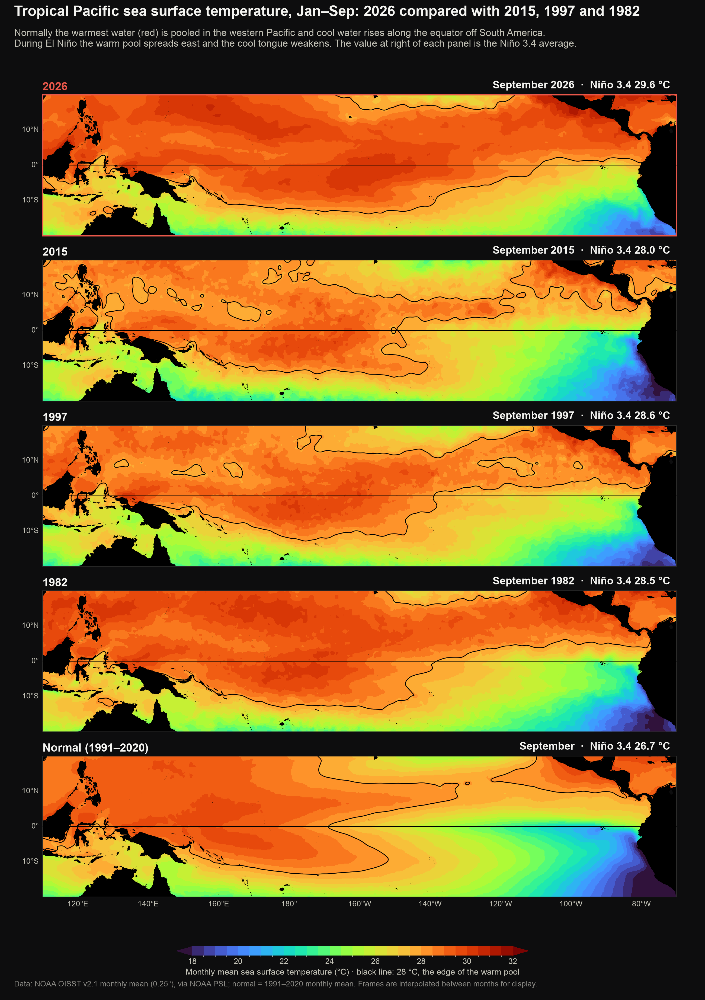
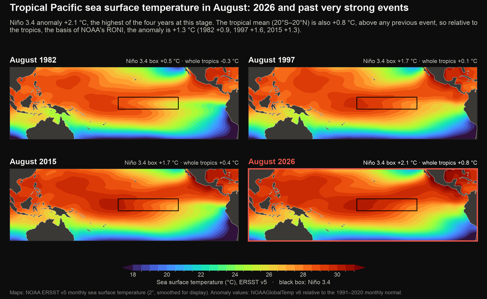
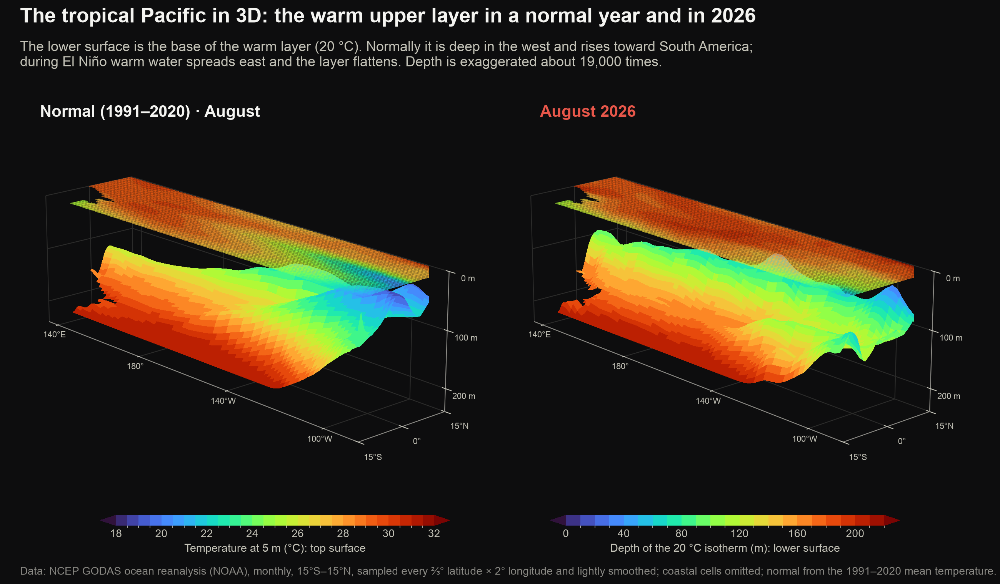
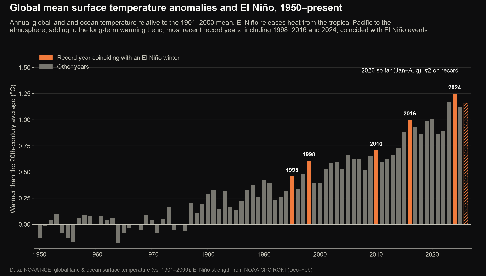

El Niño 2026–27
The 2026–27 El Niño in historical context
A strong El Niño (A periodic warming of the central and eastern equatorial Pacific Ocean, with related changes in winds and rainfall, recurring every two to seven years.) is developing in the equatorial Pacific. These figures compare its surface and subsurface evolution with the strongest events since 1950, using NOAA observations, reanalysis (A best estimate of past ocean or weather conditions, made by combining observations with a numerical model.) and official forecasts.
Start here: El Niño in one minute
Normally, steady trade winds blow west across the tropical Pacific, piling warm water near Asia and Australia, where it fuels heavy rain. Off South America, cold water rises from below and keeps the surface cool.
During El Niño, the winds weaken, and the warm water and its rainfall spread east. The ocean off South America warms by several degrees, and the shift in tropical rainfall alters weather patterns around the world, including the winter storm track over California.
Reading this page. Most figures show anomalies: how much warmer (red) or cooler (blue) than the 1991–2020 average the ocean is for that time of year. Maps of actual temperature use a rainbow scale in which dark red is warmest. Underlined terms show a short definition when you hover over or tap them.
Learn more: NOAA ENSO Blog · What is El Niño? (NOAA PMEL) · NOAA's monthly ENSO diagnostic discussion
What's happening now
- Current strength
- NOAA's Relative Oceanic Niño Index (NOAA's official El Niño index (RONI): the Niño 3.4 anomaly measured relative to the average of the whole tropical ocean, so that general warming is not counted as El Niño. Three-month averages.) reached +1.7 °C for Jul–Sep 2026, a strong El Niño. The monthly Niño 3.4 (A region of the central equatorial Pacific (5°S–5°N, 170°W–120°W) whose temperature is the main measure of El Niño.) anomaly (The difference from normal (the 1991–2020 average) for the same time of year; +2 °C means 2 °C warmer than usual.) was +2.8 °C in September.
- Compared with past events
- In September, Niño 3.4 (+2.8 °C, against +1.8 °C in 1997) and Niño 1+2 (The region off the coasts of Peru and Ecuador (10°S–0°, 90°W–80°W).) (+4.7 °C, against +3.6 °C in 1997) are warmer than in 2015, 1997 and 1982 at the same point in the year.
- Below the surface
- In August, the upper 200 m of the central and eastern equatorial Pacific was +4.2 °C above normal, compared with at most +2.6 °C (1997) in past very strong events at the same stage.
- Forecast
- NOAA's October 2026 outlook gives a 100% probability of a very strong event (≥ +2.0 °C), with a median forecast peak of +2.7 °C in Oct–Dec 2026, above the 1950–present record of +2.4 °C (1982–83).
- Southern California
- Coastal waters have recorded 220 marine heatwave (A spell of at least five days when sea surface temperature is above the 90th percentile for the time of year (Hobday et al., 2016).) days in 2026 through 23 September, the most on record for the date. NOAA's outlook gives Los Angeles a 50–60% chance of a wetter-than-normal December–February.
Computed from the latest NOAA data when this page was built (October 16, 2026).
Why this El Niño stands out
The key findings, recomputed from the latest NOAA data at every update. The sections below show the evidence, starting at the ocean surface.
- Warmest El Niño on record at this stage In September, the Niño 3.4 anomaly was +2.9 °C, against a previous high of +2.2 °C (2015–16) among the 22 El Niño events since 1950 at the same point in the year.
- Fastest development since 1950 Niño 3.4 has warmed by 3.4 °C since January, more than any previous El Niño over the same months (previous largest: 2.7 °C in 1997–98).
- Record warmth across the whole equatorial Pacific At their peaks, past very strong events were strongest either near South America (1982, 1997) or farther west (2015). In September, the current event is the warmest on record at this stage in all four Niño regions (previous high in brackets): Niño 4 (The western-central equatorial Pacific, 5°S–5°N, 160°E–150°W.) +1.2 °C (+1.1 °C), Niño 3.4 +2.9 °C (+2.2 °C), Niño 3 (The eastern equatorial Pacific, 5°S–5°N, 150°W–90°W.) +3.7 °C (+2.8 °C), Niño 1+2 +4.4 °C (+3.8 °C).
- Far more heat below the surface In August, the upper 200 m of the equatorial Pacific (180°–80°W) was +4.2 °C above normal, against a previous high of +2.6 °C (1997–98) among the 13 El Niño events since 1980. This reservoir of heat can sustain surface warming over the coming months.
- Most water above 28 °C on record for the time of year In August, the equatorial Pacific (5°S–5°N) held 13.2 × 10¹⁴ m³ of water warmer than 28 °C, the temperature at which the ocean can sustain heavy tropical rainfall, against a previous high of 10.6 × 10¹⁴ m³ (2023–24) among the 13 El Niño events since 1980.
- Forecast to set a new record NOAA's October 2026 outlook places the median peak at +2.7 °C on the RONI scale, above the record of +2.4 °C set in 1982–83.
1. At the surface: where the warm water is
El Niño begins with warm water spreading east along the equator. These figures show the sea surface across the tropical Pacific in 2026, in past very strong events and in a normal year.
Water warmer than 28 °C, normally confined to the western Pacific, now reaches farther east along the equator than in 2015, 1997 or 1982 at the same point in the year.

How to read this figure
Each map shows the actual sea surface temperature for one month. Red and dark red are warmer than about 28 °C (inside the black line), warm enough to fuel heavy tropical rainfall. Compare each year with the Normal panel at the bottom: during El Niño the warm area spreads east toward South America.
In the same month, 2026 is warmer than past very strong events both in the Niño 3.4 region and across the tropical Pacific as a whole.

Warming is strongest near South America and weakest in the western Pacific, a pattern closest to 1997–98.

How to read this figure
The map shows the four standard boxes along the equator, from Niño 4 in the west to Niño 1+2 off South America. Each chart plots how much warmer than normal one box has been, month by month.
Surface warming in the eastern Pacific is stronger in 2026 than at the same time in any past very strong event.

How to read this figure
Time runs down the page, one row per month; position runs left to right from the western Pacific to South America. Red marks warmer-than-normal water. Warmth that slants down and to the right is moving east over time.
2. Below the surface: the heat that fuels it
The surface is only part of the picture. Warm water stored in the upper 200 metres of the ocean supplies heat to the surface and can sustain an El Niño for months.
In a normal year the warm layer is thin near South America; in 2026 it has thickened there, so the cold water that normally cools the eastern Pacific stays far below the surface.

How to read this figure
Each block is the tropical Pacific seen from the south-east, with Asia at the far left and South America at the right. The coloured lower surface is the base of the warm layer: red where it lies deep, blue where it is close to the surface. The thin top sheet is the sea surface temperature.
Rotate the model to see the base of the warm layer flatten across the Pacific in 2026, compared with the tilt of a normal year.
Rotatable 3D model of the tropical Pacific built from NOAA ocean data.
How to read this figure
Load the view, then drag to rotate and use the + and − buttons to zoom. Use the buttons to change year and the slider or play button to move through the months. The lower surface is coloured by depth: red where the warm layer is thick, blue where it is thin.
More warm water is stored along the equator in 2026 than at the same stage of 2015, 1997 or 1982.

How to read this figure
Each map shows how far below the surface the warm upper layer reaches (the depth of the 20 °C isotherm). Dark red means warm water extends deep; blue means the warm layer is thin. Watch the band between the dashed lines: during El Niño the red area spreads east along the equator.
The hottest water has grown the most: the volume warmer than 28 °C is far above normal and above 2015, 1997 and 1982 at the same stage.

How to read this figure
Each slice runs along the equator from Asia (left) to South America (right) and from 5 m down to 200 m. Colours mark temperature layers, from below 20 °C (dark blue) to above 29 °C (dark red). The dashed lines show where 20 °C and 28 °C normally lie; red reaching below or east of them means more warm water than usual. The bar beside each slice adds up the volume in each layer, warmest on the left.
A series of Kelvin waves (Pulses of warm water that travel east along the equator beneath the surface, crossing the Pacific in about two months.) has carried warm water from the western Pacific to South America since late 2025, each one adding to the warm layer in the east.
![Animated infographic of Kelvin waves along the equatorial Pacific from July 2025 to 14 October 2026, from daily satellite sea level. 6 Kelvin waves crossed the Pacific: wave 1 left 150°E on 7 December and reached 95°W on 28 January 2026 at 2.8 m/s; wave 2 left 150°E on 24 January and reached 95°W on 14 March 2026 at 3.0 m/s; wave 3 left 150°E on 20 March and reached 95°W on 7 May 2026 at 3.0 m/s; wave 4 left 150°E on 12 April and reached 95°W on 27 May 2026 at 3.2 m/s; wave 5 left 150°E on 13 July and reached 95°W on 29 August 2026 at 3.1 m/s; wave 6 left 150°E on 1 September and reached 95°W on 13 October 2026 at 3.4 m/s. Sea level east of 130°W rose from -1 cm to +46 cm over the period.](img/09_anim_kelvin.png)
How to read this figure
Top: the three steps of a Kelvin wave. Middle: sea level along the equator on the day shown; red bumps moving east are Kelvin waves. Bottom: the same, day by day, with time running down the page, so each wave is a red streak slanting down to the right. Yellow dashed lines trace each wave once it has crossed the Pacific.
In 2026 the 20 °C line is nearly flat across the Pacific: the cold water that normally lies close to the surface in the east has been pushed down.

How to read this figure
Each panel is a vertical slice through the ocean along the equator, from Asia (left) to South America (right) and from the surface (top) to 200 m depth (bottom). Warm colours above the black line are the warm upper layer. Normally the line rises toward the east; during El Niño it flattens.
The upper ocean holds far more extra heat in 2026 than in any past very strong event at the same stage.

How to read this figure
Each panel is a vertical slice along the equator, from Asia (left) to South America (right), down to 200 m. Colours show how much warmer (red) or cooler (blue) than normal the water is.
Warm water spreading east beneath the surface has built a larger heat reservoir in 2026 than in past very strong events.

How to read this figure
Time runs down the page, one row per month; position runs left to right from the western Pacific to South America. Colours show the average temperature anomaly of the top 200 m. Diagonal streaks running down and to the right are Kelvin waves: pulses of warm water that cross the Pacific beneath the surface in about two months.
3. Compared with every El Niño since 1950
How this event has developed compared with all 22 El Niño events since 1950, measured at the same point in the year.
At the latest month, 2026 is warmer than every El Niño since 1950 at the same stage, both at the surface and in the upper ocean.

How to read this figure
Each line is one El Niño. The horizontal axis runs from January of the year the event began to June of the following year; the vertical axis shows how much warmer than normal the water was. A line above the others at a given month means that event was further developed at that point in the year.
Pick a measure and a month to see where 2026 ranks among every El Niño since 1950.
Show the data as a table
If NOAA's median forecast is realised, 2026–27 would rank first by peak strength among El Niño events since 1950.
![Ranked bar charts of the 12 strongest El Niños since 1950 by peak strength, length in months and total extra warmth. 2026–27: peak +2.7 °C, 10 months (forecast); 1982–83: peak +2.4 °C, 13 months; 1997–98: peak +2.3 °C, 12 months; 2015–16: peak +2.2 °C, 14 months; 1991–92: peak +2.1 °C, 15 months; 1965–66: peak +2.0 °C, 12 months; 1972–73: peak +2.0 °C, 12 months; 1957–58: peak +1.9 °C, 16 months; 2009–10: peak +1.5 °C, 7 months; 1986–87: peak +1.5 °C, 17 months; 2023–24: peak +1.4 °C, 8 months; 2002–03: peak +1.3 °C, 7 months.](img/15_event_ranking.png)
4. What comes next
NOAA's official forecast for the coming months, how its earlier forecasts have performed, and El Niño's influence on global temperature.
NOAA's official outlook places the peak of this event above the strongest El Niño since 1950.

NOAA's confidence in a very strong peak has risen with every forecast issued since April 2026.

Many of the record-warm years since 1950 coincided with El Niño, which temporarily adds to the long-term warming.

What this means for Southern California
El Niño's effects reach California mainly through winter storms and coastal ocean temperatures. See Southern California Heat for this year's summer and marine heat, and Southern California Precipitation for NOAA's winter outlook and what past strong El Niño winters brought.